大規模崩塌調查與監測
潛在大規模崩塌區調查、治理規劃、GNSS／地下水位／傾斜儀等即時監測系統規劃建置與維運，以及 Scoops3D 等三維邊坡穩定分析。
ABOUT US
聚禾工程顧問有限公司是由年輕、專業且具服務熱誠的成員組成，具備地質、防災、地理資訊、測量與工程相關專業經驗。
我們秉持「專業、品質、服務」為宗旨，將客戶的需求視為第一優先，協助客戶進行工程規劃、整治與地理資訊技術服務，以提升工作效率、降低各項業務與管理成本，進而提昇整體競爭力。
本公司建有內部品保系統，由品保專責人員定期稽核，並由計畫主持人於執行過程直接進行品質檢查與控管，確保每一份調查成果之正確性。
應用地質、水利工程技師與空間資訊博士領軍，理論與實務兼備。
內部品保制度與主持人親自把關，確保調查與分析成果正確可靠。
以客戶需求為優先，從規劃、調查到系統維運提供完整支援。
SERVICES
結合現地調查、數值分析與資訊技術，提供公部門與民間業主完整的大地工程顧問服務。
潛在大規模崩塌區調查、治理規劃、GNSS／地下水位／傾斜儀等即時監測系統規劃建置與維運，以及 Scoops3D 等三維邊坡穩定分析。
地質敏感區（山崩與地滑、活動斷層、地下水補注）基地地質調查及地質安全評估報告、環境地質調查、特殊地質資源調查。
山坡地範圍劃出與檢討變更、特定水土保持區查註、土石流潛勢溪流調查、坡地災害復建工程規劃設計。
溫泉資源調查探勘、鑿井規劃設計監造、溫泉水權與溫泉使用事業申請、監測井網觀測與管理資料庫。
WebGIS 查詢平台、防災預警系統、資料庫建置、圖資標準轉檔、QGIS 外掛與擴增實境（AR）／行動 App 開發。
無人機航拍、正射影像與數值地形製作、空載光達與衛星影像判釋，應用於崩塌地及災情調查。
集水區土砂變遷分析、降雨與水文分析、水庫及水質水量保護區巡查、水利相關規劃設計。
地質鑽探、標準貫入試驗、岩心判釋與鑽探報告、地電阻探測，以及溫泉井、監測井之規劃與施作管理。
PROJECTS
服務對象涵蓋農業部農村發展及水土保持署、經濟部中央地質調查所、經濟部水利署、交通部、國家公園及各縣市政府等單位。
| 年度 | 服務工作（契約）名稱 | 委託單位 |
|---|
＊年度為民國年；以上為部分代表案件。
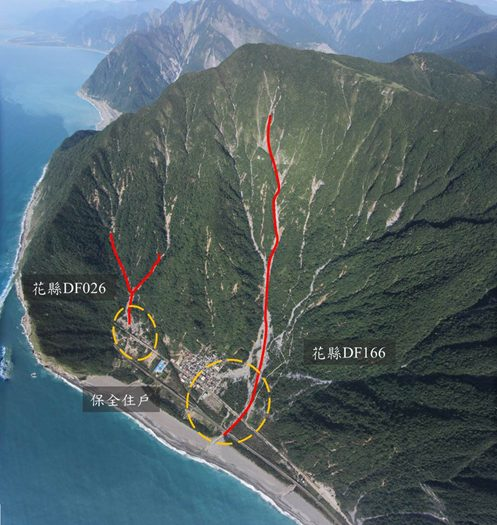
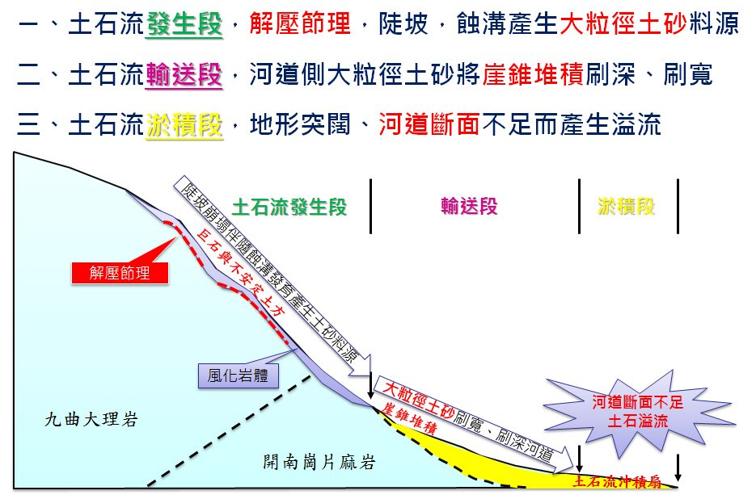
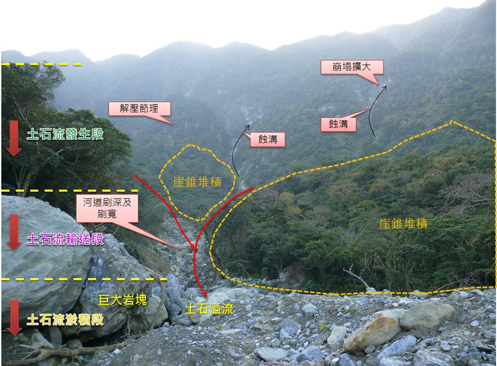
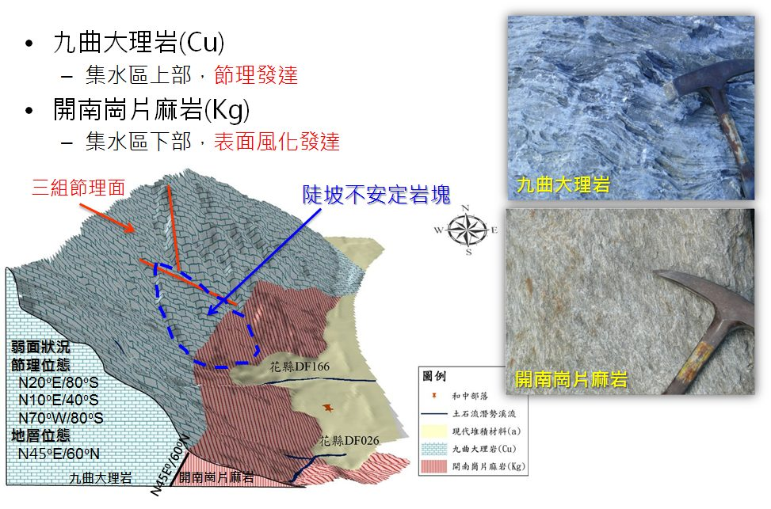
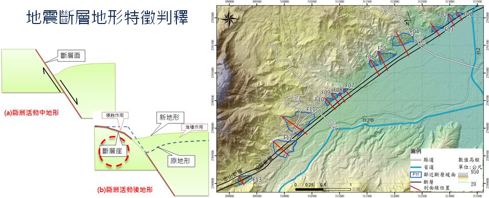
R&D
以資訊技術提升工程效率——聚禾持續自主開發 GIS 工具、監測平台與自動化流程，將現地資料快速轉化為決策資訊。
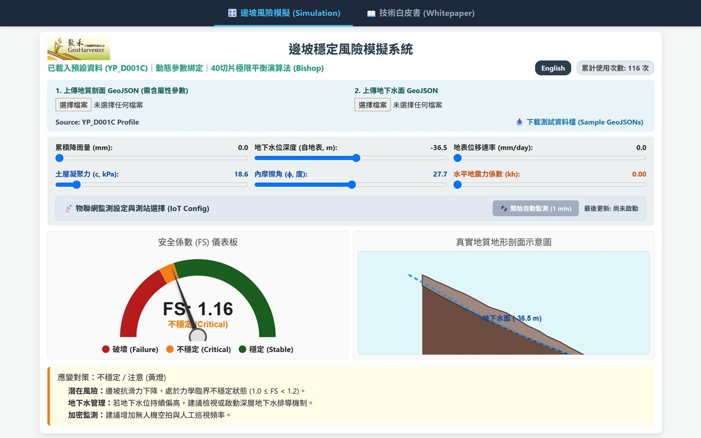
整合 Bishop 簡化法、地震力與地下水位情境，即時計算安全係數並視覺化呈現，搭配 GNSS 監測彙整，支援潛勢區評估與年報產製。
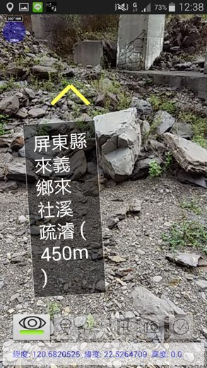
重大土砂災害集水區工程擴增實境管理系統，現場即可疊合工程與地形資訊。
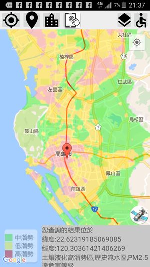
以定位查詢土石流、山崩與地質敏感區等風險資訊，強化民眾與機關防災應變。
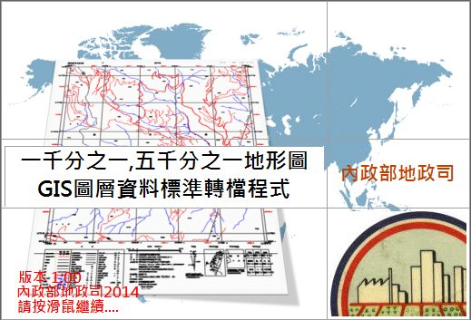
一千分之一、五千分之一地形圖 GIS 圖層標準轉檔、通用版電子地圖 GML、水資源空間資料標準 GML 及土地利用資料標準轉換程式。
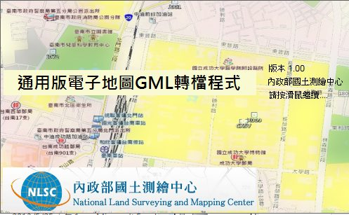
現調照片轉 GeoJSON、地質剖面繪製（Geo2020）、邊坡穩定分析、GeoPackage 整合及現調照片自動出圖等 QGIS 外掛與 Python 工具。
TEAM
團隊成員具備地質、防災、地理資訊、測量與工程等專業背景，由計畫主持人帶領執行調查、監測、分析與系統開發工作。
應用地質技師（86年專技高考及格）
具十年以上山坡地調查、土石流調查、地理資訊系統規劃開發、防災業務與山坡地劃出等經驗，長期主持各級政府防災與地質計畫。
PUBLICATIONS
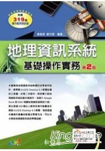
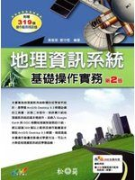
2018/10/02 受邀於水土保持局技術研究發展小組每週專題討論，發表「Scoops3D 應用於大規模崩塌潛勢區分析—以屏東縣霧臺鄉阿禮部落及佳暮部落為例」。
CONTACT
歡迎各機關單位與業主來電或來信洽詢，我們將盡速與您聯繫。